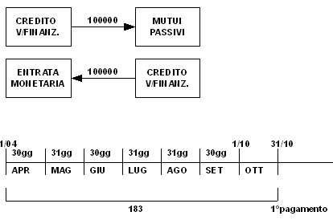

Torna alla pagina di Economia ed Organizzazione Aziendale
:: Economia ed Organizzazione Aziendale ::
Lezione 30/04/2008
Indice
Si iscrivano nelle situazioni contabili al 31/12 le voci che descrivono le seguenti operazioni:
A) il 1/04 si ottiene un mutuo di 100000 al tasso 4,50% con interessi posticipati da pagare ogni 6 mesi.
B) stipula il 1/07 un contratto annuale di vigilanza notturna al canone mensile di 80 e da pagare in via posticipata ogni 4 mesi.
C) è scaduto un credito il 15/10 di 18250 e il debitore si è impegnato a pagare per la nuova dilazione di 4 mesi interessi al tasso del 5%. Gli interessi si incassano il 15/10.
D) si è stipulato un contratto di leasing per un pc, si prevede il pagamento di 10 canoni bimestrali anticipati di 2600 a partire dal 10/08.
RICHIESTA:
Box, S.E., S.P.
SOLUZIONE:
A):
MUTUO PASSIVO - PAGAMENTO INTERESSI POSTICIPATO
1/04

I = (C * i * t)/365 = (100000 * 0,045 * 183) / 365 = 2256,16
1/10
31/12 interessi maturati
I = (100000 * 0,045 * 92) / 365 = 1134,25
B):
VIGIL.NOTTURNA - PAGAMENTO POSTICIPATO
1/07
C):
CREDITO SCADUTO - PAGAMENTO INTERESSI ANTICIPATI
Tot giorni = 123
15/10 - incasso interessi
I = (18250 * 0,05 * 123) / 365 = 307,50
31/12 - interessi di competenza
307,50 : 123 = x : 77
int : gg = quota int. di competenza
x = (307,50 * 77) / 123 = 192,50 valore di competenza
interessi NON di competenza: 307,50 - 192,50 = 115
15/10
31/12
valore di competenza: 307,50 - 115 = 192,50
D):
il 10/08 si paga il 1° canone bimestrale anticipato
10/08
10/10
10/12
per trovare la quota di competenza:
tot giorni:
21gg a dicembre
31gg a gennaio
10gg a febbraio
TOT = 62giorni
2600 : 62 = x : 21
canone bimestrale : periodo canone = quota canone di competenza : giorni competenza
x = (2600 * 21) / 62 = 880,65
il valore da sospendere dai costi è la quota del canone non di competenza:
2600 - 880,65 = 1719,35
canone - quota di competenza
le situazioni contabili finali saranno: